DSCI 4411 - Fundamentals of Data Mining
The American University in Cairo
Fall 2025
Two main objectives:
Classification: Can we predict if a superhero is a HERO or VILLAIN based on their attributes?
Clustering: Can we discover natural character ARCHETYPES (groupings) in superhero universes?
Source: Kaggle Super-Heros Dataset
| Metric | Value |
|---|---|
| Total Records | 1,200 characters |
| Total Features | 17 |
| Target Variable | is_good (Hero=1, Villain=0) |
| Class Balance | 65% Heroes / 35% Villains |
| Missing Values | None ✓ |
| Feature | Description | Range |
|---|---|---|
| height_cm | Height in centimeters | 150-250 |
| weight_kg | Weight in kilograms | 45-128 |
| age | Character age | 18-100+ |
| years_active | Years as hero/villain | 1-50 |
| Feature | Description | Why Important |
|---|---|---|
| power_level | Overall power rating (0-100) | Measures strength |
| public_approval_rating | Public perception (0-100) | How people view them |
| training_hours_per_week | Training intensity (0-60) | Dedication level |
| civilian_casualties_past_year | Collateral damage (0-10) | Destructiveness |
| Power | % of Characters |
|---|---|
| super_strength | 28.8% |
| flight | 31.4% |
| energy_projection | 30.1% |
| telepathy | 30.4% |
| healing_factor | 30.8% |
| shape_shifting | 31.7% |
| invisibility | 31.5% |
| telekinesis | 31.8% |
Key Observation: All powers are ~30% prevalent - evenly distributed!
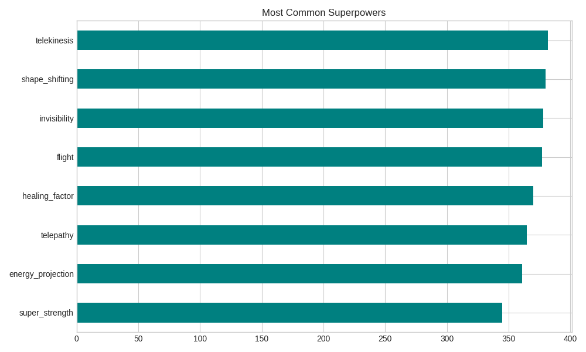

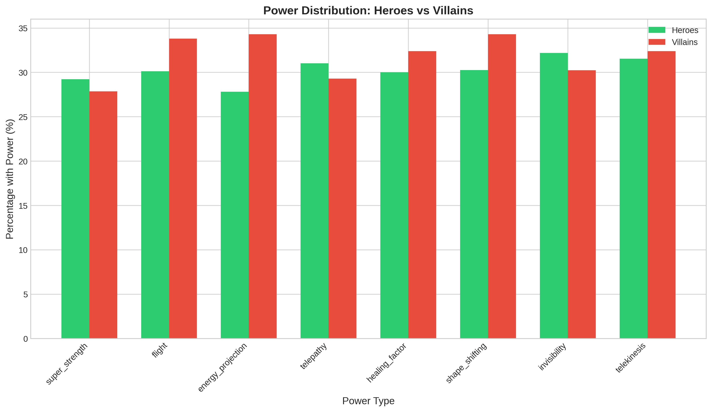

is_good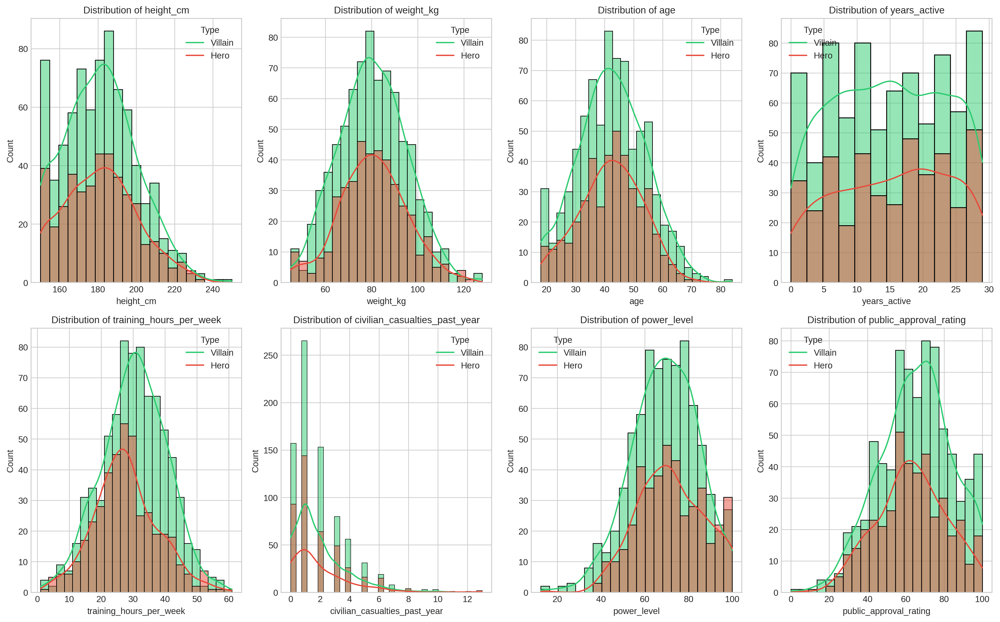
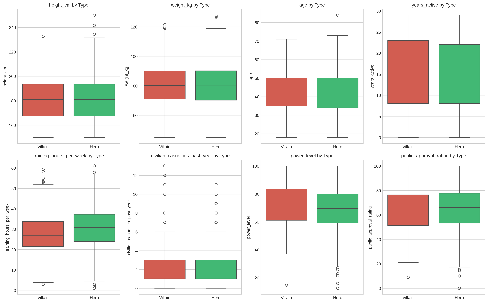
┌─────────────────────────────────────────────────────────────┐
│ Stage 1: Feature Engineering │
│ → Created 7 new features to improve predictions │
├─────────────────────────────────────────────────────────────┤
│ Stage 2: Classification │
│ → Tested 19 different ML models │
├─────────────────────────────────────────────────────────────┤
│ Stage 3: Hyperparameter Tuning │
│ → GridSearchCV for top models │
├─────────────────────────────────────────────────────────────┤
│ Stage 4: Clustering │
│ → K-Means, DBSCAN, Hierarchical │
└─────────────────────────────────────────────────────────────┘
| New Feature | Formula | Rationale |
|---|---|---|
| total_powers | Σ all power flags | How many abilities? |
| power_efficiency | power_level / years_active | Power gained per year |
| training_intensity | training_hours / age | Relative effort |
| casualty_rate | casualties / years_active | Damage per year |
| approval_power_ratio | approval / power_level | Public trust vs power |
| bmi | weight / height² | Physical build |
| experience_score | years × training_hours | Total experience |
| Category | Models | Count |
|---|---|---|
| Linear | Logistic Regression, LDA, QDA | 3 |
| Tree-based | Decision Tree, Random Forest, Extra Trees, Gradient Boosting, HistGB, AdaBoost, XGBoost | 7 |
| SVM | Linear, RBF, Polynomial kernels | 3 |
| Instance-based | KNN (k=5), KNN (k=10) | 2 |
| Probabilistic | Naive Bayes | 1 |
| Neural Network | MLP (3 architectures) | 3 |
| Total | 19 |
Random Forest Tuning:
params = {
'n_estimators': [100, 200, 300],
'max_depth': [5, 10, 15, None],
'min_samples_split': [2, 5, 10],
'min_samples_leaf': [1, 2, 4]
}
# 108 combinations tested!
Gradient Boosting Tuning:
params = {
'n_estimators': [100, 200],
'learning_rate': [0.01, 0.1, 0.2],
'max_depth': [3, 5, 7]
}
# 36 combinations tested!
| Algorithm | Parameters Explored |
|---|---|
| K-Means | k = 2 to 9 |
| DBSCAN | eps = [0.5, 1.0, 1.5, 2.0], min_samples = [3, 5, 10] |
| Hierarchical | n = [2, 3, 4, 5], linkage = ['ward', 'complete', 'average'] |

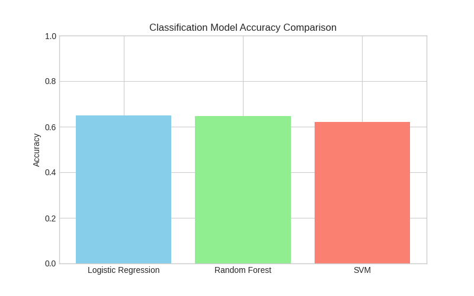
| Rank | Model | CV Accuracy | Test Accuracy | F1 Score |
|---|---|---|---|---|
| 🥇 | LDA | 63.9% | 65.0% | 0.778 |
| 🥈 | SVM (Linear) | 65.0% | 65.0% | 0.788 |
| 🥉 | Logistic Regression | 63.8% | 64.6% | 0.776 |
| 4 | AdaBoost | 63.5% | 64.6% | 0.768 |
| 5 | Random Forest | 62.6% | 64.2% | 0.768 |
Best Model: Gradient Boosting (Tuned) @ 65.0% accuracy
| Model | Best Parameters | Test Accuracy |
|---|---|---|
| Random Forest | max_depth=15, n_estimators=200 | 63.3% |
| Gradient Boosting | learning_rate=0.01, max_depth=3 | 65.0% |
| SVM | C=1, kernel='poly' | 62.1% |
| Method | Test Accuracy |
|---|---|
| Voting (RF + GB + LR) | 63.8% |
| Stacking (RF + GB + KNN → LR) | 63.3% |
Ensembles did NOT beat individual tuned models!
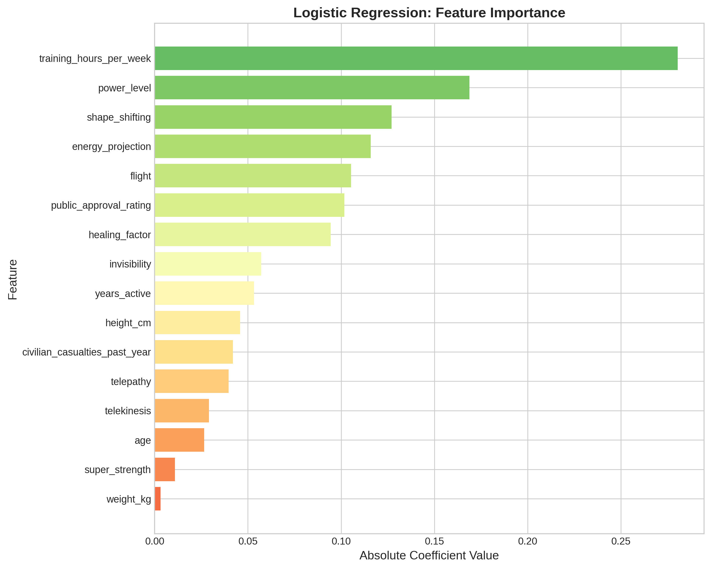
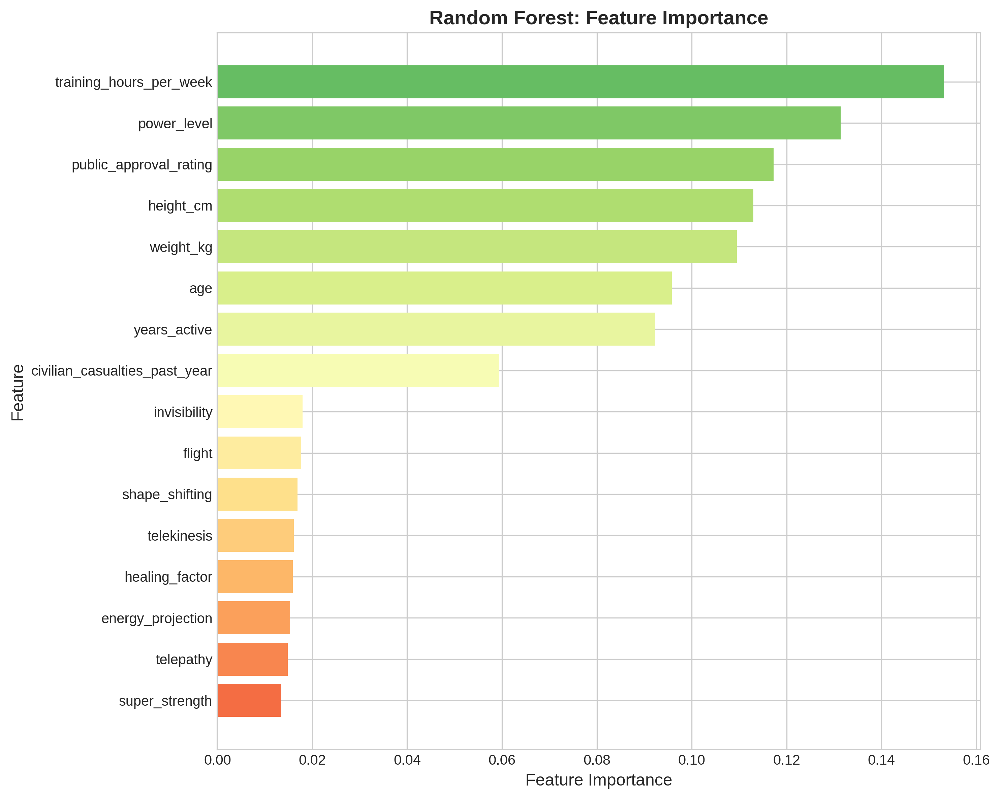
training_hours_per_week ranks highly
Note: Engineered feature ranked #2 → Feature engineering helped!
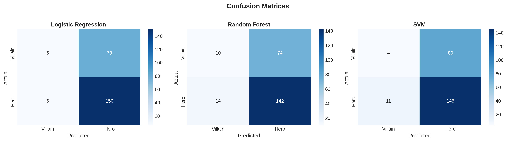

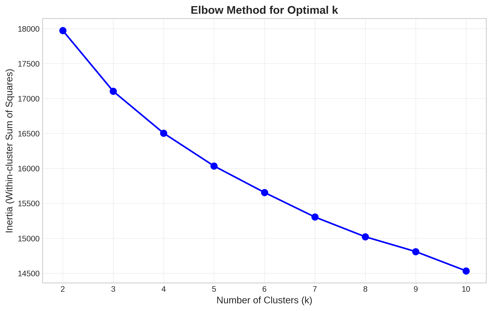
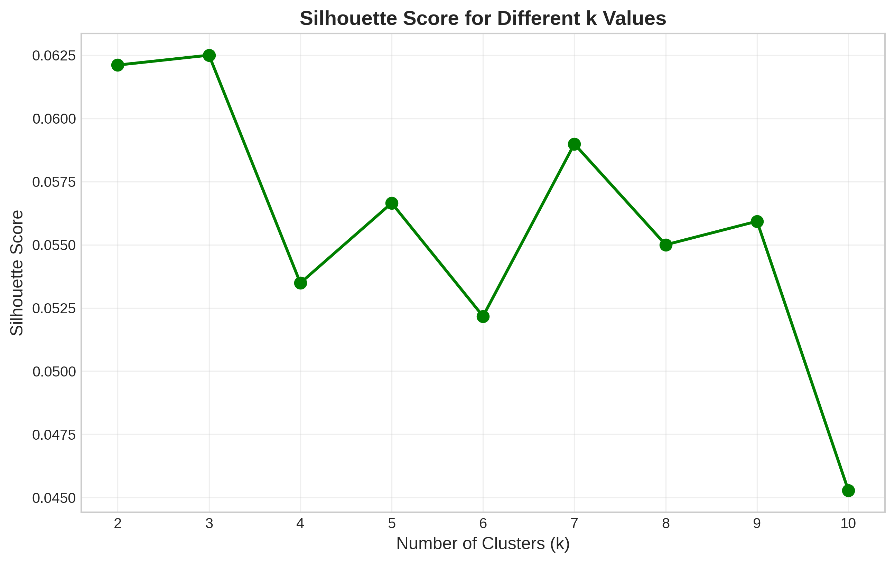

| Algorithm | Best Config | Silhouette Score |
|---|---|---|
| K-Means | k=2 | 0.167 ✓ Best |
| Hierarchical | n=2, ward | 0.154 |
| DBSCAN | eps=1.5 | Poor (too much noise) |
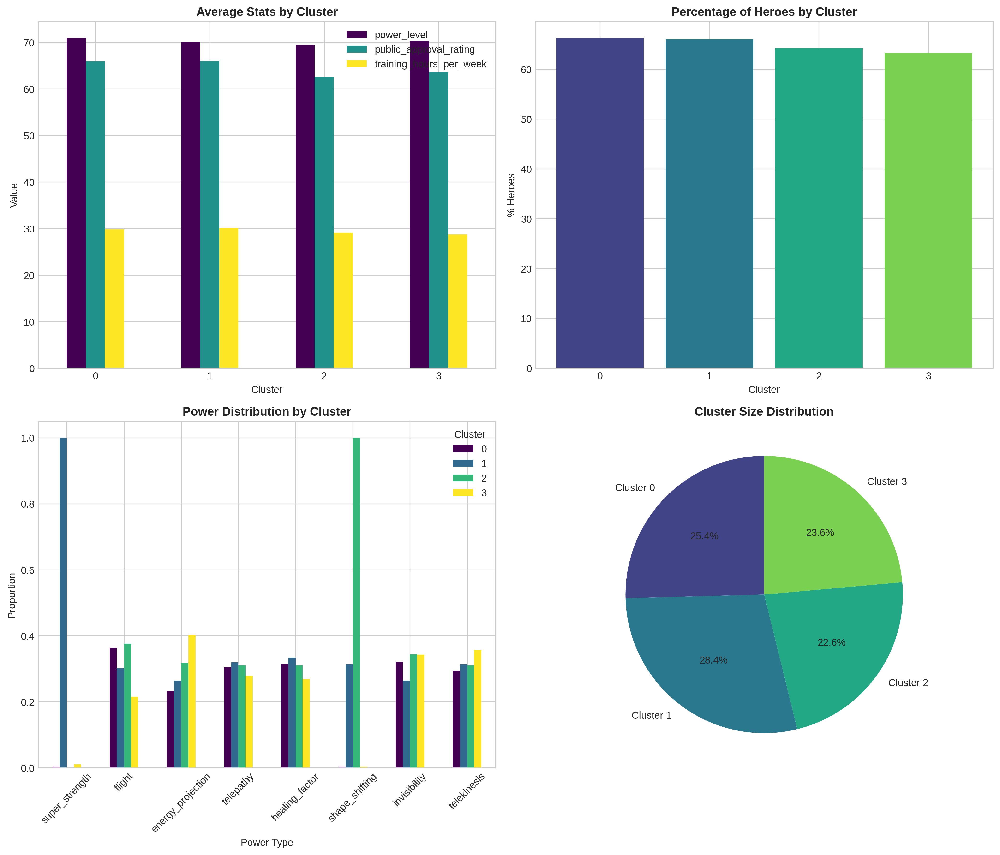
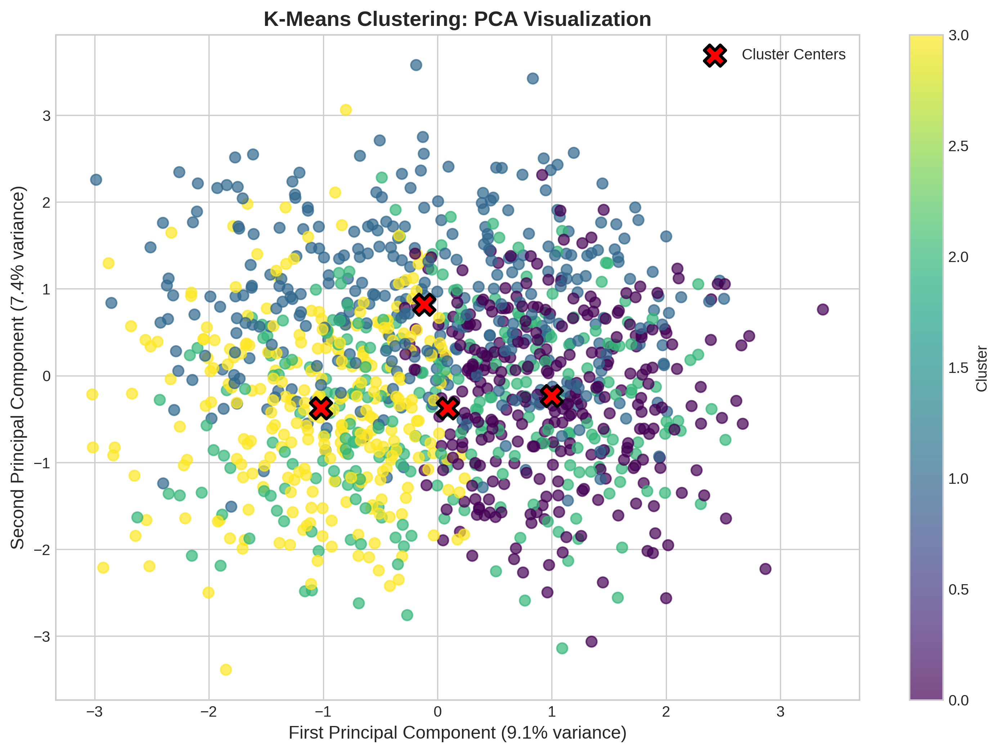
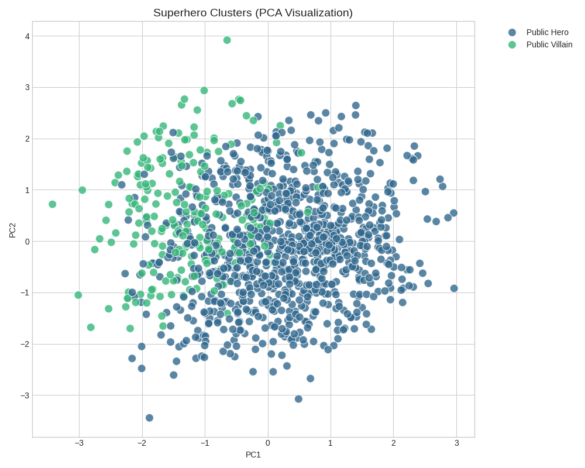

Key Insight: Clusters found by K-Means are NOT hero/villain groups! - Clustering finds power-based groups - High-power vs Low-power characters - This matches comic lore: heroes and villains span all power levels
| Cluster | Size | Power Level | Casualties | Character Type |
|---|---|---|---|---|
| Cluster 0 | ~600 | High (60+) | Higher | High-Power Characters |
| Cluster 1 | ~600 | Low-Mid (<60) | Lower | Regular Characters |
Natural groupings are POWER-BASED, not MORALITY-BASED
is_good ≈ 0Features don't strongly predict morality
Powers Are Equally Distributed
None of these are in our dataset!
Possible Synthetic Data
| Feature | Importance Rank |
|---|---|
| training_intensity | #2 ✓ |
| power_efficiency | Top 10 |
| total_powers | Top 10 |
Yes! But overall improvement was only ~1-2% accuracy
The dataset's fundamental limitations cannot be overcome with engineering.
Not hero group vs villain group
This Makes Sense in Comics!
| Finding | Implication |
|---|---|
| 🎯 Accuracy ceiling at 65% | Dataset lacks predictive signal |
| ⚡ Powers don't define morality | Villains and heroes share same abilities |
| 📊 Behavioral features matter most | power_level, training are key |
| 🔍 Natural clusters are power-based | Not hero/villain groups |
| 🧪 Feature engineering helped | But couldn't break the ceiling |
Random label assignment explains weak patterns
Missing key features
No text descriptions, origin stories, affiliations
Binary labels too simplistic
Team affiliations, universe data
Multi-class classification
Predict alignment spectrum (Lawful Good → Chaotic Evil)
Graph analysis
Model character relationships & interactions
NLP on text
| Category | Tools |
|---|---|
| Language | Python 3.10 |
| Data Processing | pandas, numpy |
| ML Models | scikit-learn, XGBoost |
| Visualization | matplotlib, seaborn |
| Environment | Jupyter Notebook |
| Version Control | Git, GitHub |
superhero_project/
├── superhero_analysis.ipynb ← Main code
├── superhero_analysis_executed.ipynb ← With outputs
├── figures/ ← 22 visualizations
├── model_comparison_results.csv ← All model metrics
├── superhero_enhanced_clusters.csv ← Data with clusters
└── report.md ← Full documentation
https://github.com/elbarbary/superhero-classification
| Figure | Description |
|---|---|
| target_distribution.png | Class balance (65% heroes, 35% villains) |
| power_distribution.png | Frequency of each superpower |
| power_comparison.png | Powers split by hero/villain |
| hero_villain_powers.png | Detailed hero vs villain power comparison |
| correlation_heatmap.png | Feature correlations |
| numerical_distributions.png | Histograms of all numerical features |
| boxplots_comparison.png | Box plots comparing classes |
| Figure | Description |
|---|---|
| model_comparison.png | Initial 3-model comparison |
| model_comparison_all.png | All 19 models ranked |
| lr_feature_importance.png | Logistic Regression coefficients |
| rf_feature_importance.png | Random Forest importance |
| feature_importance_tuned.png | Tuned RF importance |
| confusion_matrices.png | Multiple model confusion matrices |
| confusion_matrix_best.png | Best model confusion matrix |
| Figure | Description |
|---|---|
| elbow_method.png | K-Means inertia curve |
| silhouette_scores.png | Silhouette scores for different k |
| elbow_silhouette.png | Combined elbow + silhouette |
| cluster_analysis.png | Cluster characteristic profiles |
| clustering_pca.png | PCA visualization with clusters |
| cluster_pca_final.png | Final named archetypes |
| clustering_pca_comparison.png | Clusters vs ground truth |
GitHub: https://github.com/elbarbary/superhero-classification
Dataset: https://www.kaggle.com/datasets/kenil1719/super-heros
Course: DSCI 4411 - Fundamentals of Data Mining
The American University in Cairo - Fall 2025